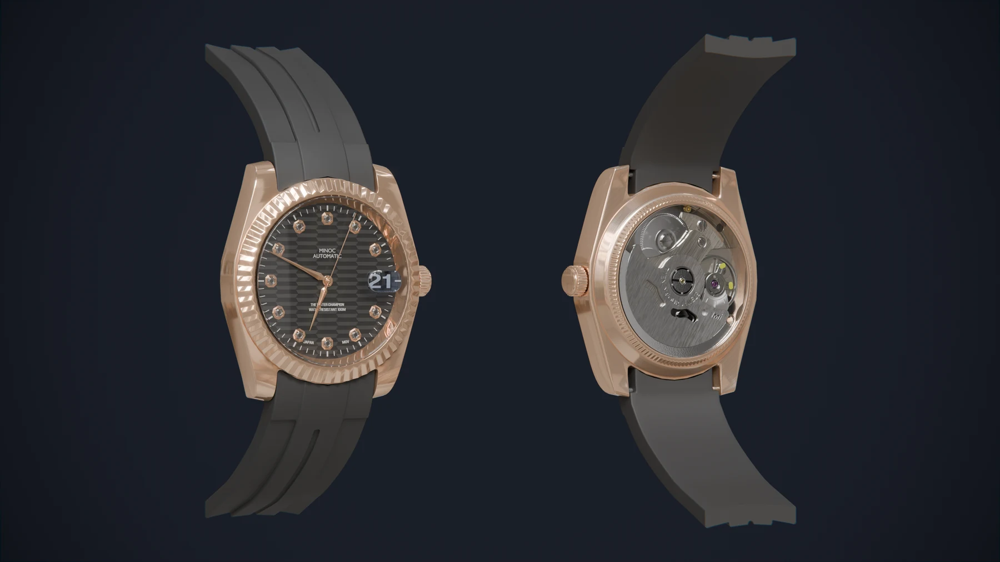
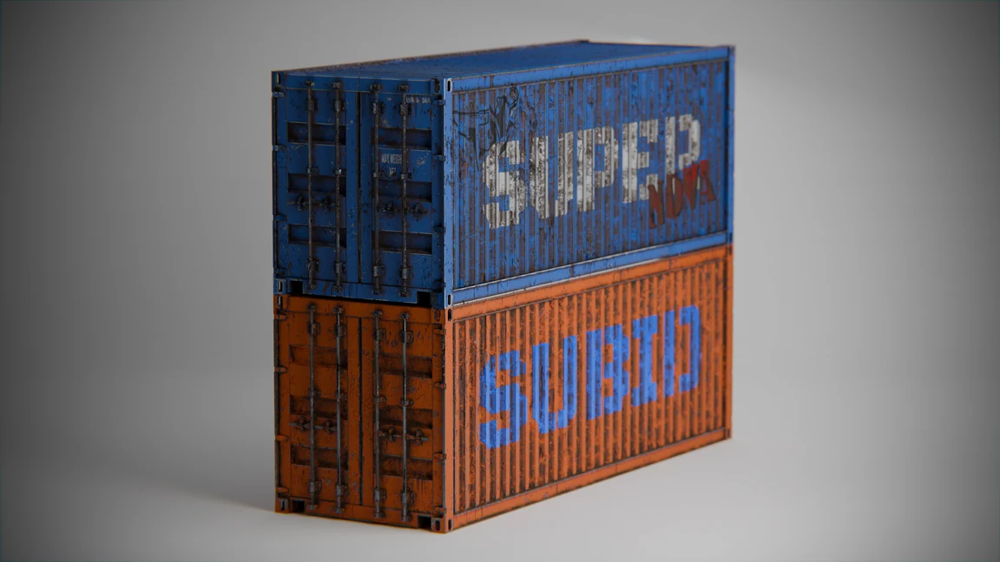

ENVIRONMENT / GAME ASSETS
MAGGI
산업적인 공간의 모델·텍스처 제작.
01 / SHIM YOUNGHWAN
3D ENVIRONMENTS & ASSETS
배경 모델링 · 프롭 · 재질
THE GALLERY
환경 → 프롭 → 재질 연구
ENVIRONMENT / GAME ASSETS
산업적인 공간의 모델·텍스처 제작.

ENVIRONMENT / AI-ASSISTED WORKFLOW
다섯 테마의 모듈과 절차 생성 지도.

PROP / MODELING & TEXTURING
프레임, 구동계와 재질의 디테일.

COMMERCIAL / MINOC
사진에서 모델, 애니메이션과 제품 영상까지.

PERSONAL / ROBOT
바퀴형 로봇의 모델과 움직임.

STUDIES / FORM & SURFACE
일상적인 물체의 형태와 표면 표현.

PRODUCTION / TRAINING ASSETS
대검과 항공기 부품 모델링·텍스처링.
BEHIND THE WORK
심영환 / Shim YoungHwan
모델의 형태와 재질부터 엔진 안의 움직임까지 제작하는 심영환입니다.
GET IN TOUCH